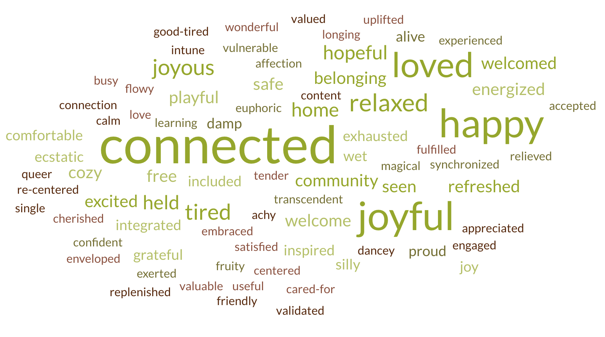
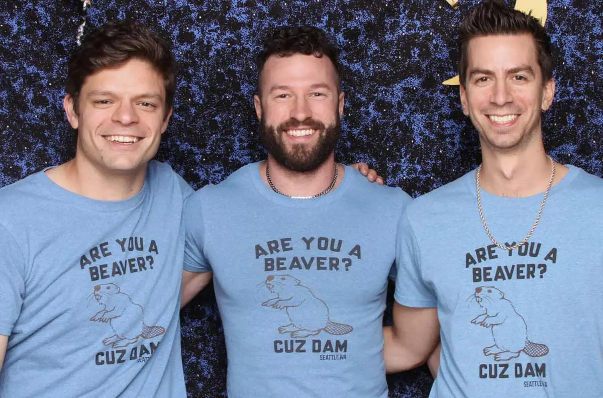
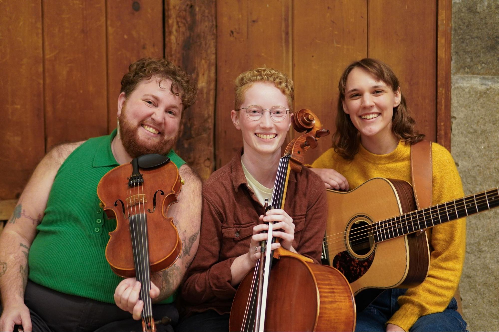
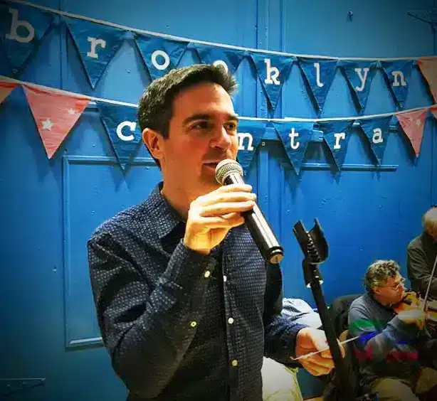
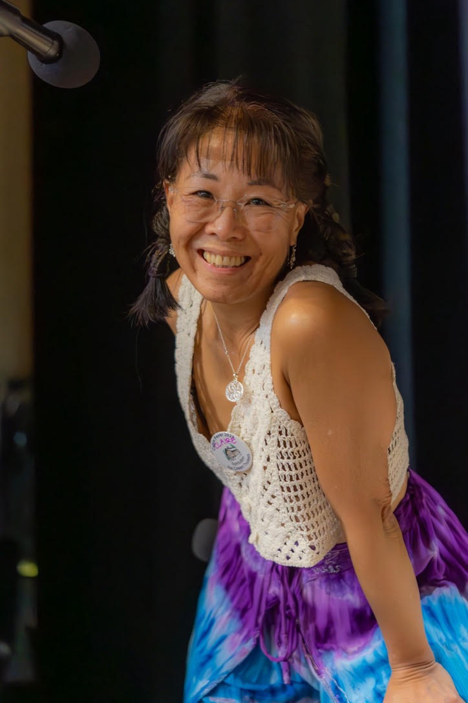
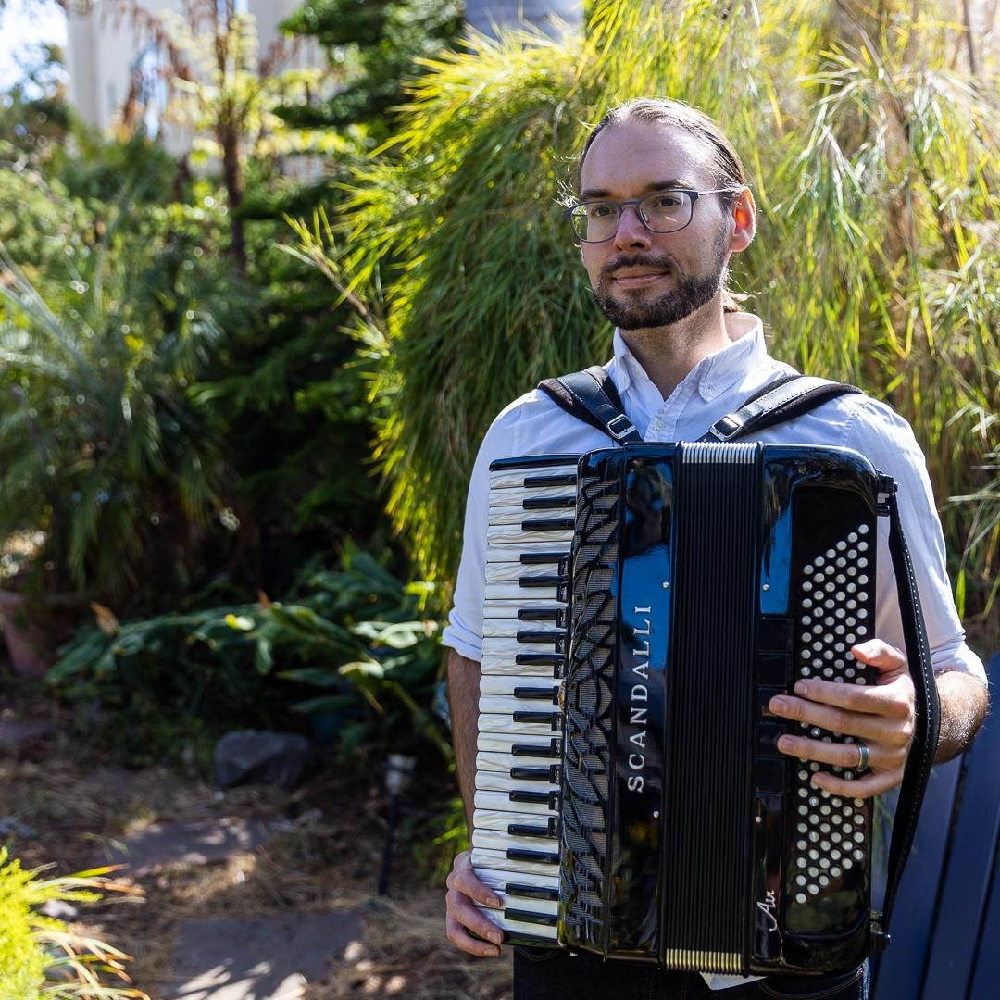

Camp costs $395 per person and our sliding scale is $125 - $665


The Dam Beavers are Ben Schreiber on fiddle, Scotty Leach on piano, and Ness Smith-Savedoff on drums. With roots in a wide variety of styles and genres, their music comprises an eclectic mix of old and new, familiar and unfamiliar. Let the current sweep you away as the Dam Beavers build a dam of rhythm beneath your feet.

Nobody's Business is a contra dance band from Boston, featuring Hayden Stern (Natterjack, Orb Weavers) on fiddle, Casey Murray (Northwoods, Corner House) on cello, and Helen Kuhar (Dearest Dear, Good Company, Ice Cream Truckers) on guitar. This up and coming trio of seasoned musicians draws from an eclectic mix of musical traditions. Between driving guitar, soulful cello, and ecstatic fiddle playing, you may ask, "how do they create a lush, effortless groove that keeps dancers entranced on the dance floor?" The answer is… it's Nobody's Business.

Ben started contra dancing at 12 and started teaching dances at 15. Since then he has called and organized for dances across the northeast, with a focus on LGBTQ and gender-role-free dance communities. He fosters a welcoming and inclusive space for diverse groups of new and experienced dancers, adding tips on style and safety into his teaching. Ben currently lives in Western Massachusetts.

Claire's passion is to share the joy of music, dance & community. She brings fun, welcoming, and delightful dances to events across the world. She teaches a wide variety of dances: Contra, Squares, English Country, Family/Community/Ceilidh, and French balfolk. Now hailing from North Carolina, she is well known to Bay Area contra dancers for her smile & playful energy on the dance floor and her ability to meet the needs of dancers'.

Christopher Jacoby does sound and plays accordion, mandolin and guitar for Contras, English, and Scottish country dancing. He has performed in many bands and combinations over the years, but you might have seen him with: Audrey Jaber (and Julie Bennett at Northwest Queer Contra Camp in 2025), Wind Weavers, Ground Lift, Switching Protocols, Phoenix, and Last Exit. He can be heard on "Last Exit's Greatest Hits (by Last Exit)" and "Remember Restaurants...?" by Audrey & Christopher. Christopher's non-dancing related hobbies include (but are not limited to): singing, sourdough and fermenting, Digital Audio & Audio Engineering, training computers to understand music, and workshop facilitation.